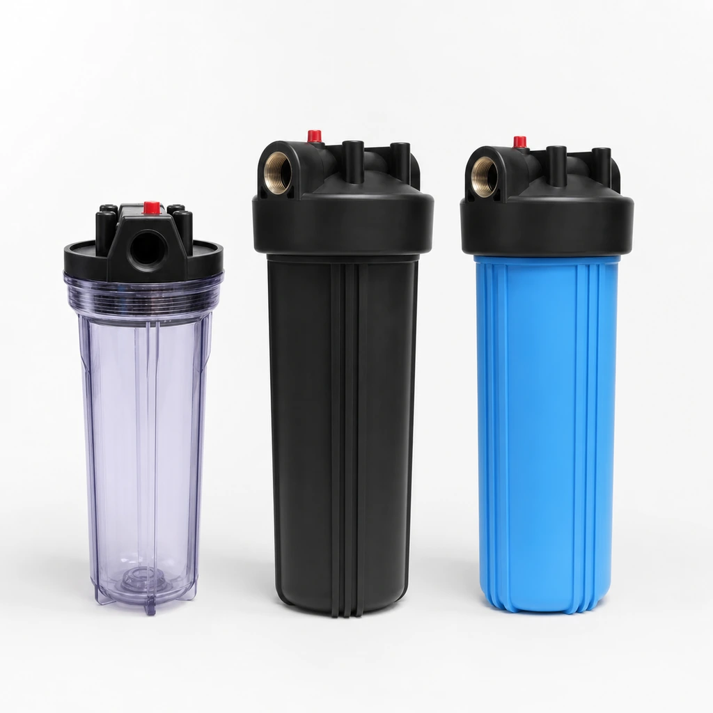
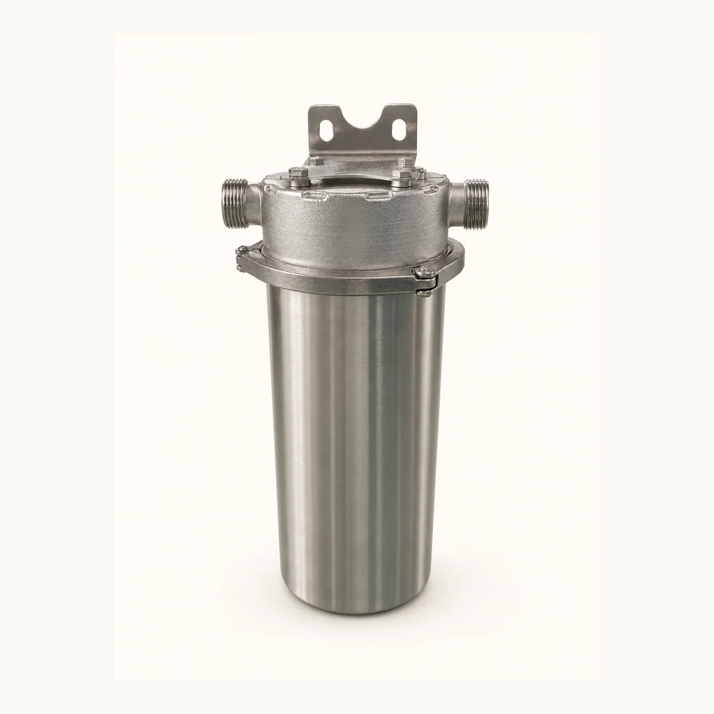
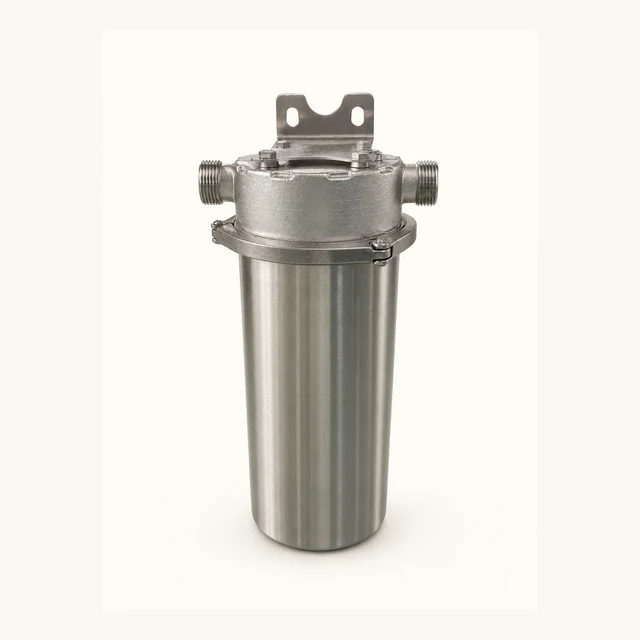
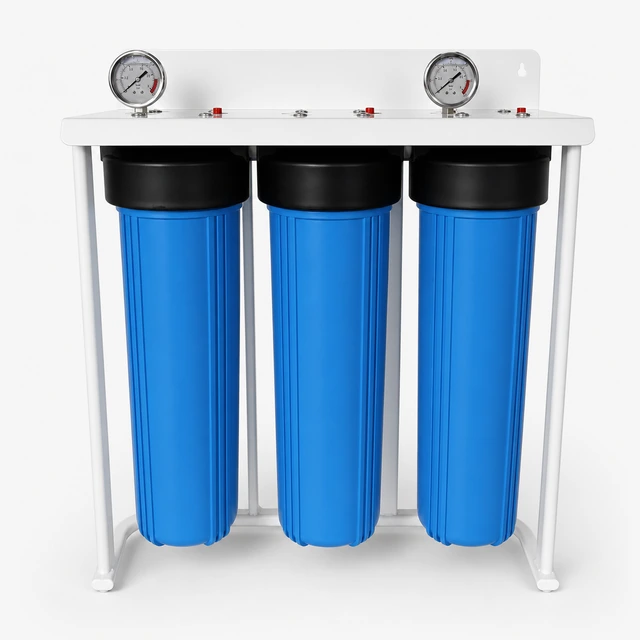
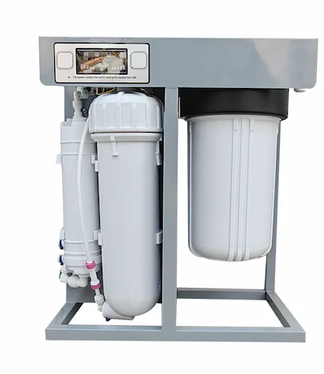
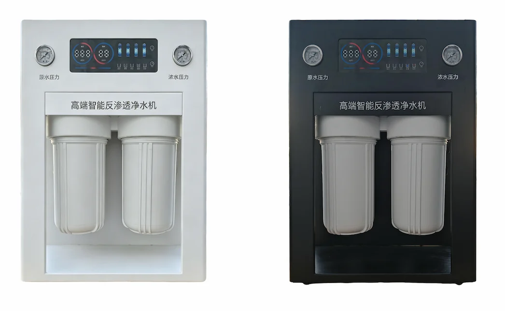
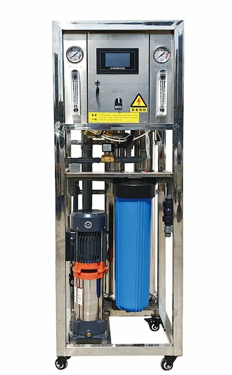

20-Inch Three-Stage Big Blue Water Filter System
- System type
- 3 × Big Blue
- Housing class
- 20″
- Filtration stages
- 3
Water filter housing manufacturer for PP, Big Blue and 304 stainless steel housings. Optional 316L, OEM ports, brackets, labels and packaging.
Compare the listed models and open a detail page. Model records are counted separately from configurable dimensions; suitability must be confirmed for your project.


Water filter housings hold sediment, carbon, UF and specialty cartridges in residential, commercial and industrial filtration systems. Yuchen Water supplies PP housings, Big Blue housings and 304 stainless steel housings for distributors and project buyers, with optional 316L for custom projects.
Applications include whole house filtration, commercial kitchens, RO pretreatment, industrial process water, villas and replacement cartridge programs. Housing selection depends on flow, pressure, installation space, cartridge size and required material grade.
| Materials | PP, reinforced PP, SUS 304, SUS 316L |
|---|---|
| Sizes | 10 inch, 20 inch, Big Blue, jumbo and custom |
| Ports | NPT/BSP options |
| Applications | Whole house, commercial and industrial filtration |
| OEM Options | Port, color, bracket, gauge, label and carton |
OEM/ODM choices include material, port size, color, bracket, wrench, pressure gauge, label, nameplate, carton and pallet packing. Stainless steel models can be quoted with surface finish and port configuration options.
Select Big Blue filter housing, PP housing or 304 stainless steel filter housing by cartridge length, port size, pressure rating, seal method, bracket requirements and replacement access for cartridge filter housing systems.

SUS 304 Stainless Steel Jumbo Water Filter Housing for 10- and 20-Inch Cartridges — Pressure gauge: Optional pressure gauge.
Send Inquiry
20-Inch Three-Stage Big Blue Water Filter System — Filtration stages: 3.
Send Inquiry10- and 20-Inch Water Filter Housings for Replacement Cartridges — Connections: 1/4″ / 1/2″ / 3/4″ / 1″.
Send Inquiry
Commercial Big Blue RO Water Purifier 400G-800G — Treatment Process: 10-inch Big Blue PP prefilter + RO + T33.
Send Inquiry
Commercial High-Flow Deluxe Big Blue RO Water Purifier 800G-1600G — Treatment Process: 10-inch large-diameter PP + 10-inch large-diameter cotton-carbon composite filter + RO×2.
Send Inquiry
Single-Tank 20-Inch Big Blue PP Reverse Osmosis Water Purification Equipment 250-500 L/h — Treatment Process: 20-inch Big Blue PP prefilter + RO.
Send InquiryYes. Packaging and labeling details are confirmed by model and order scope.
Share model, quantity and destination for quotation.